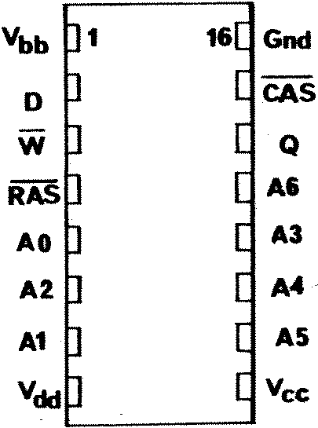
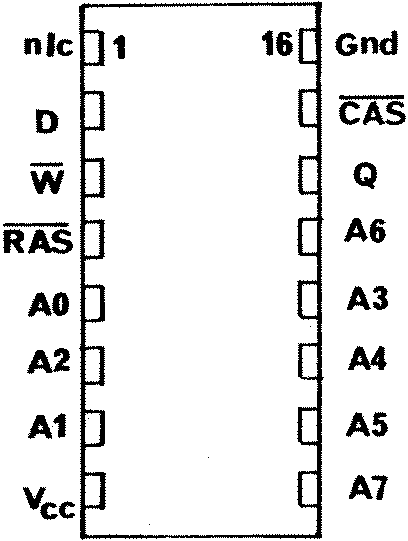

80-Bus News |
May–June 1984 · Volume 3 · Issue 3 |
| Page 10 of 51 |
|---|
There are probably many Nascom owners who would like to have a full complement of RAM but who jib at paying over £100 for one of the 64k boards which can be purchased, and so most of us soldier on with our old RAM A boards. Some may have added another set of 8 4116s, using the ‘piggy-back’ method described in INMC-80 (1). However, now that 4164 dynamic RAMs can be obtained for less than £5, I started to ponder whether a better solution might not be to abandon the 4116s and add a block of 8 4164s at a cost of about £35. After I had worked out how to do this, it seemed a shame to leave the other block of 8 sockets unfilled, so I splashed out yet again and added another set of 4164s to give me a total capacity of 128k. Since the Z80 can only address 64k at any given time, I had to find out how to page the additional memory in and out of the address space. This note describes how all this can be achieved. I will not attempt to give a detailed recipe of which tracks to cut where, but rather, will try to give sufficient information so that anyone with a bit of knowledge of digital logic should be able to follow what I have done. The conversion to 64k can be done without the addition of extra support chips, apart from a couple of inverters, and only requires simple mods to the circuitry, but the use of two 64k blocks imposes the need for some means of controlling which parts of the 128k of available RAM is coupled into the memory-map at any given time and this requires some additional chips; the way I have done it only takes 7 extra TTL parts costing in total under £2.
Let us start with a little background on dynamic RAM. This differs in several respects from static RAM, such as the 6116 discussed in 80-BUS News (2). Firstly, the chips we are interested in use address multiplexing; secondly, they have only two data pins, an input and an output; and, thirdly the data must be periodically refreshed. Also, because they are based on NMOS, rather than CMOS, the 4116 consumes rather more power than the equivalent-capacity 6116. Let us briefly consider the implications of these statements. Our understanding can be aided by Fig. 1, which gives the pin layout of the 4116 and 4164.
|
4116  |
4164  |
FIGURE 1 | |
You see that the 4116 has only 7 address pins and the 4164 has 8. To address 16 kilobits, we need 14 address lines, and so these have to be fed to the chip in two parts. First the lowest 7 lines of the address bus are fed to the address pins of the chip and these are latched internally by applying a low on the /RAS (row address select) pin; then, the next 7 bits are fed to the chip and these are latched by pulling the /CAS (column address select) pin low. It is one of the functions of the board designer to ensure that the addresses and their appropriate latching signals are fed to the chip in the correct sequence. The 4164 operates in a similar manner but requires that all sixteen address lines are coupled in two groups A0 – A7, and A8 – A15. Setting up an address on the input latches gives access to one cell so that we can read or write one bit. When R/W goes low, the bit presented at the input pin D is latched provided /CAS is also low. The stored bit then
| Page 10 of 51 |
|---|